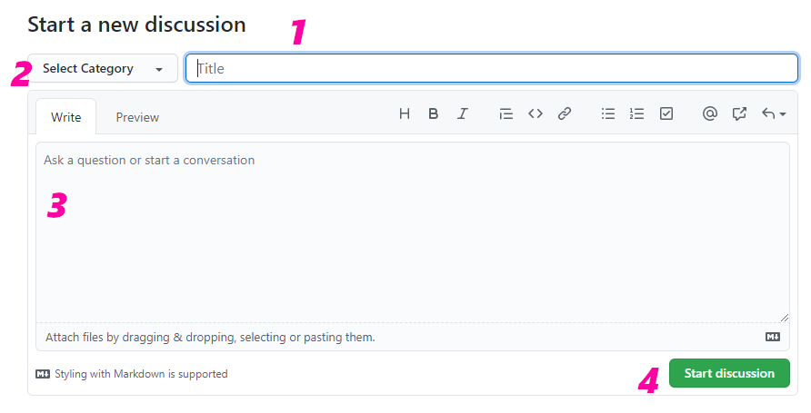

|
Alis Framework
1.3.6
Develop the video games of your dreams.
|


|
|
Alis Framework
1.3.6
Develop the video games of your dreams.
|
|
During the testing phase and even after publication a set of questions appeared that were frequently asked. Therefore, it has been chosen to include this section within the manual.
The answer is no. We are currently working on finding a solution for users using visual studio version 2017.
The answer is yes and no. If you are working only with the Core or the Tools, there should be no problems when changing to a new version. However, if you were working with an older version of the Editor, there is still no ability to migrate your project to the latest version.
Some users report that when they are trying to load a sample project, they can't and sometimes the Editor even closes itself. In these cases it is recommended to open the file "Project.json" found inside the project and update the directories that appear with the directory that can be found in the project right now.
The answer is yes. From the outset, this possibility was taken into account, currently allowing tools to be used in any software project, even if it is not a video game.
The answer is yes and no. On the one hand, it is true that it is always convenient to know at least a little programming to get the most out of the framework. However, if your case is that of a person who knows absolutely nothing about programming, do not worry, since in the community we can help you with whatever you need and there are several examples prepared to facilitate the task.
From the beginning, the community has been listened to and it is something that we will continue to do, therefore, we offer you a section called "discussions" as a public forum where you can make all kinds of queries.
On the official page of the project there is a section called 'Discussions'. In this section you can participate in the different Forum conversations that are open or you can create a new conversation thread as follows:

As you can see in the previous image, there is a green button that says 'New discussion'. Pressing this button will display a form that must be filled in as follows:

In this image you can see the format of a form to make a new participation in the forum.
As usual, a failure or error can always occur on the part of the software that harms us in the interaction with it. For this reason an incident panel has been prepared where you can open a channel of direct communication with the developer so that in the shortest time possible the problem can be solved.
On the official page of the project there is a section called 'Issues'. In this section you can report the incidents that you find using Alis.

As it can be seen in the previous image, there is a button called 'New issue' that allows you to create a new issue. Then it will ask you to select the type of incident that you would like to report:
 {width="90%"}
{width="90%"}
And once you have decided what type of incident you would like to report, you would only need to fill in the form. Of course, this form already includes a template ready for you to simply fill in what you need.